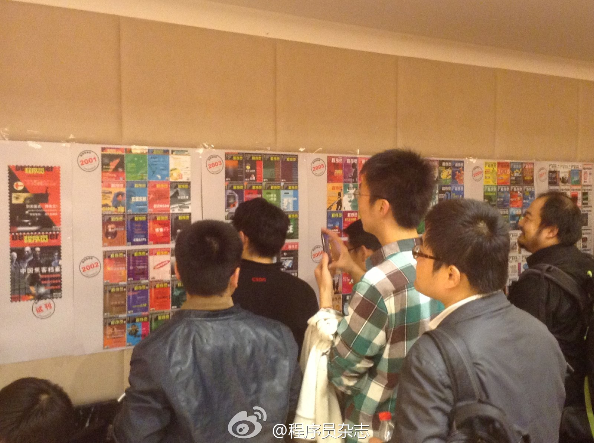
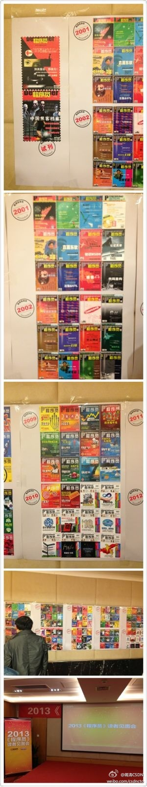
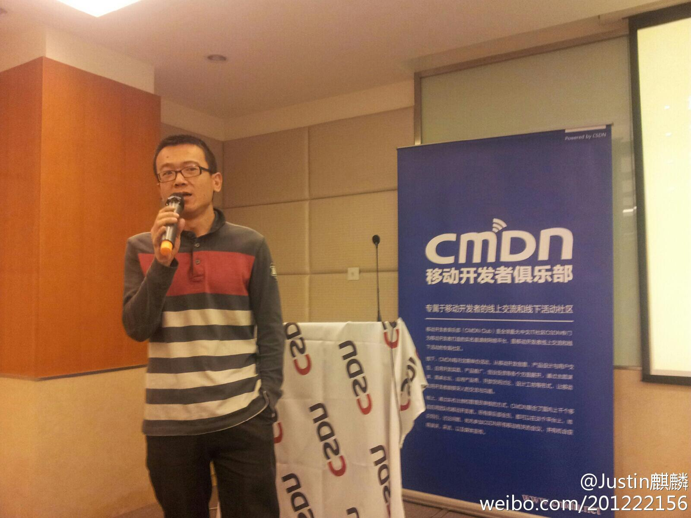

计划在江苏内容审核人员中抽调一些人做运营工作，报名并不踊跃。这次出差过去问了些人才知道。他们不知道社区运营是干什么的，不知道自己是否能做好，有些怵，因而也不敢尝试。这是一个问题，因为现在没有对社区运营很清晰的定义，也没有系统的培训资料。
在部门内部wiki上列了一些书单，准备建立社区运营方面的资料库。这些书单包括社会学，心里学，管理学类的书籍和一些工具类书。考虑以后做读书会这样的培训。既然这是一个比较新的领域，大家一起学习，相互交流，提高得能快些。
有同事问社区运营这职业有困惑。关于前景，我认为社区运营是基于互联网工具，出现的与对象人群，一种新的组织和交流方式，互联网公司是都需要社区运营的，而传统行业也越来越多地采用互联网工具。将来会出现很多对社区运营人员的需求。
我上研究生期间，网络刚火起来，学校里一位搞网络的教授经常被政府请去做指导，他实验室的学生也很抢手。但八卦得知，这位教授之前被冷落过很久，也招不到学生。但学生选专业和导师时，是看不到几年后的趋势的。很多时候的选择，在于你对某种趋势，是选择信还是不信。
员工在公司的发展，与员工自身努力关系很大，但更多时候是在于公司是否能够发展，进而提供更多机会给员工。但无论公司如何，员工不能够放弃对自身的提高，虽然提高了能力，能为公司创造更多地价值，但这种能力最终是属于自己。
我有时候喜欢把运营人员比喻成茶馆老板，大家来茶馆，有喝茶的，有打麻将的，有聊天的，有读书的，茶馆老板未必要参合到这些人的对话中，但至少要知道这些来茶馆都喜欢干什么，需要什么。另外，茶馆老板收入也许不高，可能还没来茶馆喝茶的人有钱，但茶馆老板一定不能有苦逼像。
//@阿朱:让普通人做出不普通的事情。值得深入延伸讨论。想起刘德华在《江湖》中的一句台词：我说你又不听，听又不懂，懂又不做，做你又做错，错又不认，认又不改，改又不服，不服你又不说。@Ada李力:之前听过Facebook的经验，这些经验有一个前提是: Facebook能招到最好的人。如果没有最好的人，某些经验是否有效，就值得掂量掂量了。所以，我喜欢那句话：让普通人做出不普通的事情。
多谢建议："希望CSDN在聚合人，驱动这群人朝向一个目标上做一些事，发挥社会化的功能方面更多一些探索，而最近推出的极客头条就是很好的探索。在咨询、培训、出版、猎头和开源方面也可以做更多的想象，而这发挥社会性非常关键。"@CSDN:如何进行企业信息化开发，在实际开发中需要注意什么，都有哪些窍门？其未来都有怎样的变革？另外，企业信息化和互联网开发哪更好？如何成长为一名CTO？带着诸多问题，社区之星第21期采访了深圳明源软件CTO——@阿朱 。他在行业软件15年的研发经验，定会给大家带来不一样的收获。网页链接
她上次那个在咖啡馆面试MBA的帖子，总结出细节之类。虽然引来很多骂声，但也让她的粉丝数从千位跃到七万。这个又是同样策略吗？//@罗大宁v: 这位阿姨是营销高手, 一出手, 就包含若干策略@刘瑶:把任何事情做到极致，你会发现更多机会。早晨在公司大厦一楼小卖部买早点，我的前面是2个文质彬彬西装笔挺的男士，后来轮到我，我也要了肉松。小卖部阿姨对我说，刚才第一个男人是11楼某公司老总，身价几千万，他最爱吃A款面包；第二个男人是5楼某公司老总，身价几亿大老板，他最爱吃B款面包。关注细节
参加活动的都有哪些人？据说有十五个嘉宾获得了CSDN的年度技术大会逃票，原价7550元，网站优惠价3000元。网页链接@程序员编辑部:#2013《程序员》读者见面会# 十多年的陪伴，十多年的记忆，杂志封面围观中，一起回忆那些年我们写过的，看过的文章。 
这就是昨晚搞到晚上十点，嘉宾们还兴致勃勃的活动吗？果然都是程序员，都夜猫子型的。@蒋涛CSDN:@程序员杂志 读者见面会，邀请微博上晒杂志堆的老朋友们聚会，编辑们昨晚加班把从2000年10月试刊到2013年4月的封面全部打印出来，这一面墙反映了技术大时代的发展 我在这里:北京·福码大厦 
徐毅斐本科工科，研究生学心理学。工作后进入过外企，央企，后自己创业。经历很丰富......@钛钰麒麟:#CMDN Club#国内最早的用户体验专家徐毅斐带来了‘用户体验的善与恶-从用户体验设计说教育‘。那到底什么是用户体验？细节？惊喜？设计？功能？从字面上讲，user use product，人对产品的感受，发生在人与产品的交互过程；experience是一种经验/体验。对用户来说，就是能高效愉悦使用产品的感受
一家之言吧，儿童天赋分很多方面，不仅仅是音乐和绘画。@钛钰麒麟:#CMDN Club#新儿歌创始人赵琨在做自我介绍的时候提到自己12岁，也就是小学5年纪就获得过全国计算机大赛的二等奖，是邓小平说的计算机要从娃娃抓起的一代，现在他开始做儿童音乐互联网教育，他认为儿童时期最重要的就是音乐和绘画，这不是学习，而是让孩子发现自己的天赋 
转发微博@人民日报:【家长请提高警惕！如见到下面这个外教请及时报警】英国警方正通缉一名涉嫌传播淫秽儿童照片和性侵儿童的逃犯，有迹象显示他可能潜伏在中国北京或其他城市的国际学校当老师。中国的学校无法查验外籍教师的身份背景，嫌犯很可能暴露本性，对学生形成威胁，警方呼吁及时报警。扩散！英媒：英国一名性侵儿童逃犯或潜伏在北京当教师(图)---光明网教育讯据英国广播公司（BBC）网站消息，英国警方正在通缉一名涉嫌传播淫秽儿童照片和性侵儿童的逃犯，有迹象显示，他有可能潜伏在中国北京的国际学校当老师。据悉，中国的学校无法查验外籍教师的身份背景，这名嫌犯很有可能暴露本性，对学生形成威胁，警方呼吁知情人士及时报警。